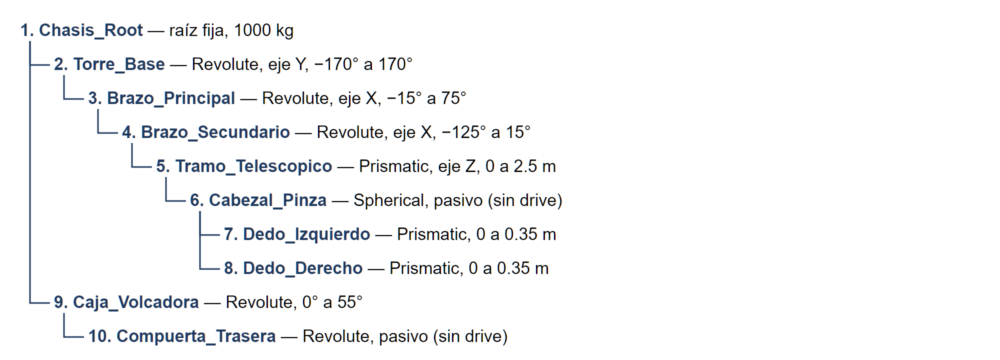

Modelamos un camión volcador con hidrogrúa: una grúa articulada con pinza de dos dedos montada detrás de la cabina. Primero la grúa levanta cubos de 8 kg del suelo y los deja en la caja. Después se pliega la grúa, se inclina la caja hasta 55° y las cargas empujan la compuerta trasera hasta abrirla y caen. Al bajar la caja, la compuerta se cierra sola.
Son 10 ArticulationBody en un único árbol, con Chasis_Root como raíz fija. De ahí cuelgan dos ramas: la grúa y el volquete. Usamos los tres tipos de joint que pide la consigna: Revolute, Prismatic y Spherical.

Hay 7 uniones con drive y 6 comandos, porque los dos dedos comparten el comando de pinza. Los valores salen de TruckSpec.cs.
| Unión | Stiffness | Damping | Force limit |
|---|---|---|---|
| Torre_Base | 60 000 | 6 000 | 120 000 |
| Brazo_Principal | 90 000 | 9 000 | 180 000 |
| Brazo_Secundario | 65 000 | 6 500 | 110 000 |
| Tramo_Telescopico | 45 000 | 4 500 | 60 000 |
| Dedos (cada uno) | 25 000 | 2 500 | 300 |
| Caja_Volcadora | 120 000 | 12 000 | 250 000 |
Las masas bajan de la raíz a la punta (1000, 150, 100, 60, 35, 15 y 5 kg) para que el solver sea estable. El torque estático en el peor caso ocupa entre 1 % y 4 % del force limit, así que ningún drive satura.
Cada eje guarda un Target. La tecla lo mueve a velocidad constante y el slider lo escribe directamente. En FixedUpdate el Target pasa a drive.target; nunca movemos un cuerpo por transform. El panel muestra también el valor Real medido en la articulación. La diferencia es el hundimiento por peso, por ejemplo Pluma principal | Target: 70.0° | Real: 67.9°.
A / D. Pluma principal: S / W. Brazo secundario: F / R. Telescópico: G / T.Q abre y E cierra. Caja volcadora: Z / X o las flechas.Retroceso, P o el botón Reiniciar Escena. Cámara: botón derecho para orbitar y rueda para acercar.